安裝檔案及整合環境
在本節中，我們將完成開發 Unity 遊戲所需的工具配置。
Step 1安裝 Unity Hub
- 前往 Unity 官網 下載並安裝 Unity Hub。
- 安裝下載包。
- 開啟程式，並且註冊/登入帳號 取得 Personal License（個人免費授權）。
- 在 Hub 的 「Installs/安裝」分頁點擊 Install Editor，建議選擇標註有 LTS (長期支援) 的版本。
- 前往 Visual Studio Code 官網 下載並安裝 Visual Studio Code。
- 安裝下載包。
- (若需要中文版本)開啟程式，並且更改程式語言為繁體中文。
- 安裝延伸模組：Unity。
- 進入Unity專案
- 在Project中的Assets的畫面中按右鍵，選單選擇
Create>Scripting>Empty C# Script - 重新命名為Test，並且點擊檔案開啟。
- 在
Test.cs中將以下程式碼複製貼上，即可儲存並關閉檔案。(注意類別名稱必須也是 Test)： - 回到Unity介面中，找到
Main Camera，並用滑鼠拖曳Test檔案拉到右側的 Inspector 面板（屬性視窗）裡放掉。 - 點擊 Unity 視窗正上方中間的 Play (▶) 按鈕。
- 查看 Unity 最下方的 Console 視窗，如果看到一行字寫著 「Unity 環境配置成功！」，就代表你成功串連了！

▲ 按下藍色按鈕下載安裝包
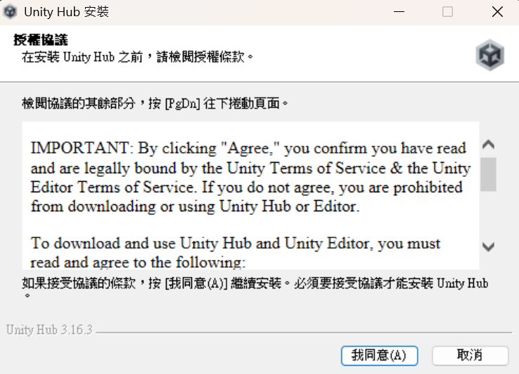
▲ 按下我同意
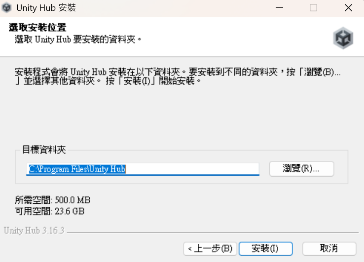
▲ 確認安裝位置，並按下安裝
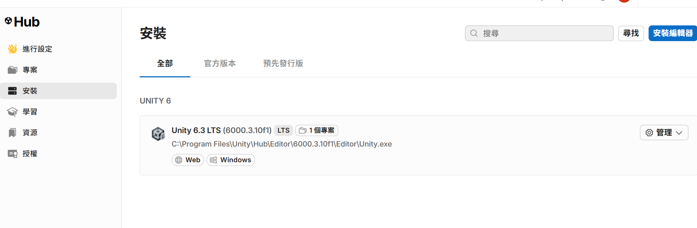
▲ 安裝最新版本
Step 2安裝 Visual Studio Code
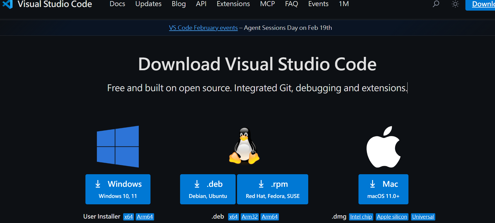
▲ 按照電腦系統選擇下載安裝包
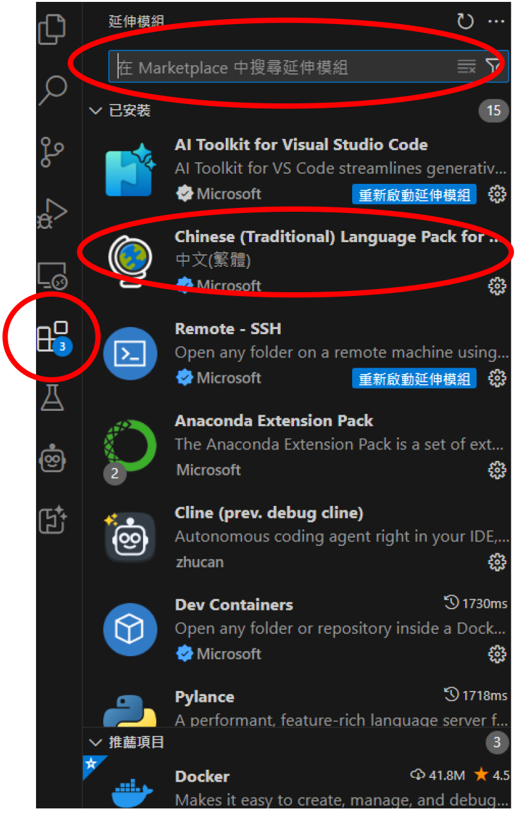
▲ 安裝中文語言
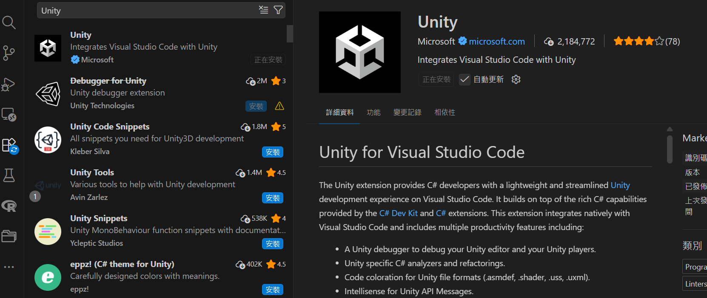
▲ 安裝Unity模組
Step 3整合 Visual Studio (腳本編輯)
若沒有正確連結，寫程式時將不會出現自動補全功能。
1. 開啟偏好設定
在 Unity 頂部選單選擇 Edit > Preferences (Mac 為 Unity > Settings)。
2. 指定外部工具
左側選擇 External Tools，在 External Script Editor 下拉選單中選擇 Visual Studio Code。
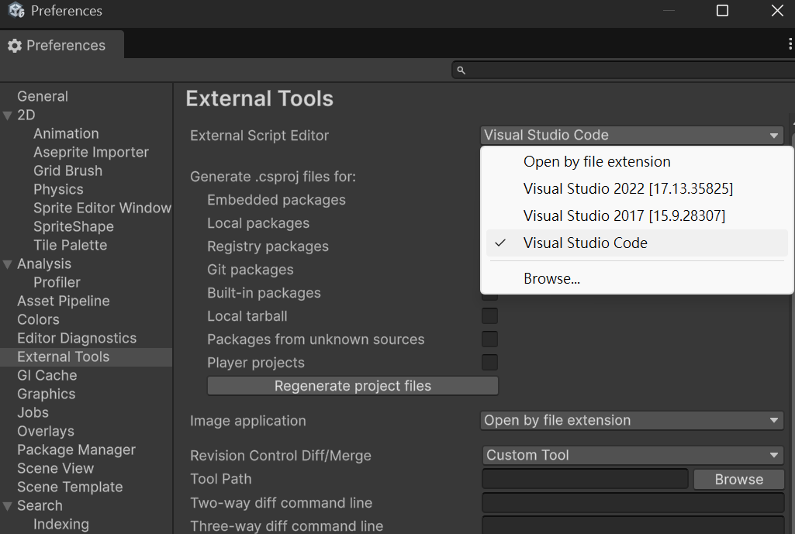
▲ Unity 與 VS Code 整合
3. 點擊保存
點擊 Regenerate project files 確保 Unity 與 VS 同步。
Step 4測試你的第一個腳本
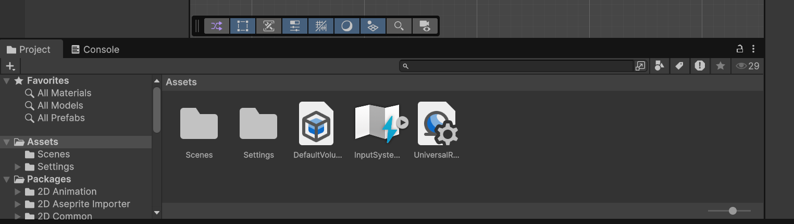
▲ Unity左下方介面
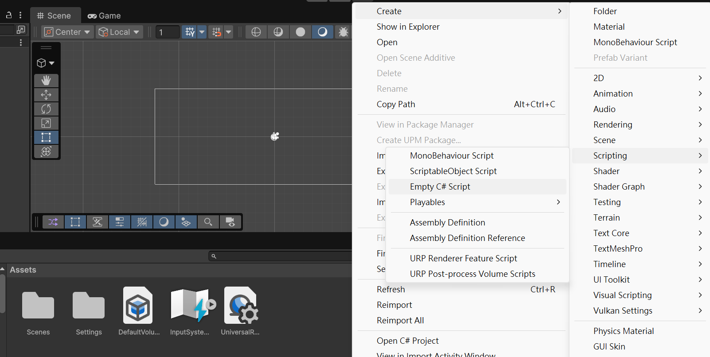
▲ 新增一個腳本
using UnityEngine;
public class Test : MonoBehaviour
{
// Start 是遊戲開始後會執行的第一個地方
void Start()
{
// 這行程式碼會在 Unity 的 Console 視窗印出訊息
Debug.Log("Unity 環境配置成功！");
}
}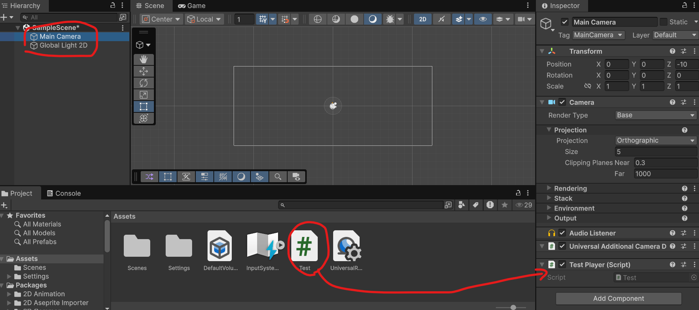
▲ 將腳本掛載至攝影機
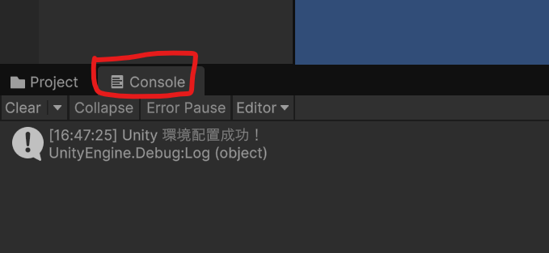
▲ 成功看到 Log 訊息